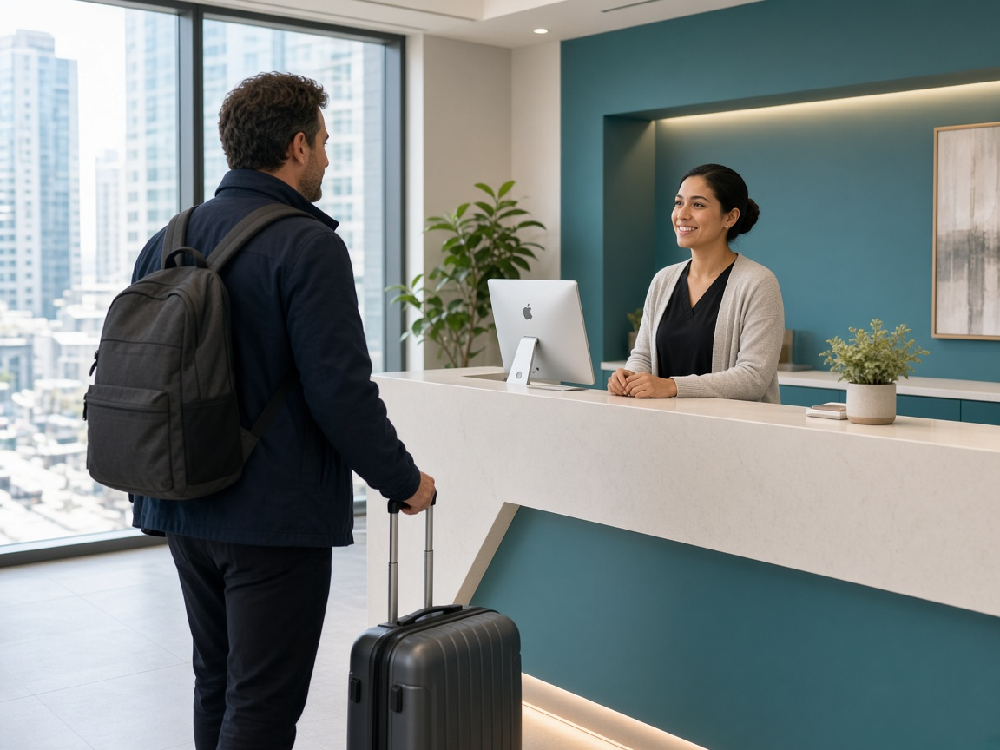

your smile deserves expert care
International Patients at Ekaa Dentistry, Hyderabad
Home | International Patients
your smile deserves expert care
Home | International Patients
International Patients
Ekaa Dentistry welcomes international patients seeking affordable dental treatment in India. Located in Kondapur, Hyderabad (near Gachibowli), our clinic combines advanced dental technology, globally trained specialists, and personalized care—making us a trusted destination for dental tourism in India. Whether you are traveling from the USA, UK, UAE, Australia, New Zealand, Europe, or the Middle East, Ekaa Dentistry offers a seamless and comfortable dental care experience tailored specifically for overseas patients, including those looking for a dentist for business travellers.
Dental Care for Business Travellers Visiting Hyderabad IT Hubs Ekaa Dentistry is uniquely positioned to serve international business travellers, IT professionals, consultants, and corporate visitors working in Hyderabad’s major tech corridors, including HITEC City, Durgam Cheruvu, Gachibowli, Kondapur, and the Financial District. Our clinic is easily accessible from premium hotels, co-working spaces, and corporate campuses, making dental care convenient even during short business stays. We understand the demands of tight schedules and frequent travel. That’s why we offer flexible appointment slots, fast diagnostics, same-day consultations, and treatment planning aligned with your travel itinerary. Whether you need a routine dental check-up, emergency dental care, cosmetic enhancement, or continuation of ongoing treatment, our specialist-led team ensures minimal disruption to your work commitments. Business travellers often choose Ekaa Dentistry for:
This makes Ekaa Dentistry a preferred dentist for business travellers visiting Hyderabad’s IT hubs. Additional advantages include:
We provide comprehensive dental care under one roof, making it easy for patients seeking affordable dental treatment and dental tourism options. Our services include: Restorative & Cosmetic Dentistry
Advanced & Surgical Dentistry
Orthodontics & Pediatric Dentistry
We also cater to the needs of business travellers looking for a reliable dentist for business travellers, ensuring that your dental needs are met efficiently.
Dental treatments in India offer affordable dental treatment options that can cost 60–70% less compared to the USA, UK, and Europe—without compromising quality or safety. At Ekaa Dentistry, we cater to dental tourism by providing international patients with transparent pricing, no hidden costs, and world-class results, making us the ideal dentist for business travellers.
We provide end-to-end assistance for your dental tourism needs, including:
Our team is dedicated to ensuring your dental journey is smooth, efficient, and stress-free.
Ekaa Dentistry, located in Kondapur, Hyderabad, is conveniently situated near the Gachibowli IT Hub, Madhapur, and Hi Tec City. This prime location not only offers affordable dental treatment but also makes it an ideal choice for dental tourism, especially for international visitors and business travelers seeking a reliable dentist for business travellers.
We strictly follow international infection control protocols, ensuring patient safety and comfort as our highest priorities. Our clinic offers affordable dental treatment that includes digital X-rays with minimal radiation, advanced sterilization systems, and single-use consumables. We use global dental material brands, making us a top choice for dental tourism. Additionally, we cater to the needs of business travellers looking for a reliable dentist.
Please reach us at excelushealthcare@gmail.com or +91 9030121100 if you cannot find an answer to your question.
Is India safe for dental treatment? Yes. India is a leading destination for dental tourism with globally trained dentists and advanced infrastructure.
How long will my dental treatment take? Treatment duration depends on the procedure. Many treatments can be completed within 5–10 days
Will language be a barrier? No. Our dental team communicates fluently in English.
Do you help with treatment planning before travel? Yes. We offer online consultations and treatment planning prior to your arrival.
Please reach us at excelushealthcare@gmail.com or on +91 9030121100 if you cannot find an answer to your question.
Do you offer dental treatment for business travellers visiting Hyderabad? Yes. Ekaa Dentistry provides fast, appointment-based dental care for international and domestic business travellers visiting Hyderabad’s IT hubs including HITEC City, Gachibowli, Durgam Cheruvu, and Kondapur.
Is Ekaa Dentistry conveniently located near HITEC City and Gachibowli? Yes. Ekaa Dentistry is located in Serilingampalle, Kondapur, which is in 10 kms radius from HITEC City, Gachibowli, Durgam Cheruvu,Madhapur and major corporate offices, making it ideal for working professionals and business visitors.
Can I get dental treatment in a short visit while on a business trip? Absolutely. We offer same-day consultations and efficient treatment planning for procedures such as dental check-ups, emergency care, root canal treatment, crowns, cosmetic dentistry, and pain relief for business travellers.
Do you offer flexible appointment timings for working professionals? Yes. Ekaa Dentistry offers flexible scheduling and specialist consultations to accommodate busy work schedules of professionals working in HITEC City, Gachibowli, and nearby IT corridors.
Is emergency dental care available for corporate travellers? Yes. Emergency dental care is available for business travellers experiencing tooth pain, swelling, infections, or dental trauma while visiting Hyderabad.
Do you provide advanced dental diagnostics for quick treatment decisions? Yes. Our clinic is equipped with in-house OPG X-ray and digital imaging, allowing faster diagnosis and treatment planning without the need to visit external diagnostic centers.
Is Ekaa Dentistry suitable for international patients and expats? Yes. We regularly treat international patients, expats, and corporate travellers, offering clear communication, ethical treatment planning, and globally accepted dental protocols.
What dental services are most commonly used by business travellers? Business travellers commonly visit us for routine dental check-ups, emergency pain relief, cosmetic dentistry, dental crowns, root canal treatment, and professional cleanings during short stays.
Ekaa Dentistry – Best Dental Clinic in Kondapur & Gachibowli Ekaa Dentistry is a trusted multispeciality dental clinic in Kondapur, Hyderabad, located near the Serilingampalle–Kondapur–Gachibowli corridor. If you are searching for a dentist near me, best dental clinic near Gachibowli, or a family dentist in Kondapur, our specialist-led team provides comprehensive and comfortable dental care for all age groups. Our services include general dentistry, cosmetic dentistry, root canal treatment, dental implants, braces and Invisalign, laser dentistry, pediatric dentistry, gum treatments (periodontics), oral and maxillofacial surgery, and in-house OPG X-ray diagnostics, ensuring accurate diagnosis and complete care under one roof. We proudly serve patients from Kondapur, Gachibowli, Serilingampalle, Masjid Banda, Hitech City, Madhapur, Hafeezpet, and nearby areas. With advanced dental technology, ethical treatment planning, and a strong focus on patient comfort, Ekaa Dentistry is committed to long-term oral health and confident smiles. 📍 Location: Serilingampalle, Kondapur, Hyderabad – Near Gachibowli
📞 Appointments: Call or book online at +91 9030121100
🕒 Timings: Mon–Sun | Specialist Consultations Available © 2026 Ekaa Dentistry. All Rights Reserved.
Powered by
